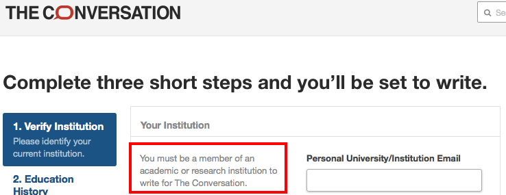

Not Much of a Conversation
I've been reading articles on The Conversation for a while, and with a couple of trips coming up, I thought I might try to write something for them. I clicked on their "Become an author" link, and got this:

My first reaction was disappointment. My second was that it's not much of a conversation if only one side gets to talk. Depending on how you count, only 2% to 18% of people doing doctorates become professors. The rest of us don't actually have our brains wiped when we leave, and acting as if we did doesn't exactly encourage us to stay engaged with the academy.
Later: the first post of this article led to a short exchange on Twitter, which led me to F1000's authorship policy. It requires "at least one of the authors is an active researcher from a recognised institution"; while I recognize the need to filter out homeopathists, anti-vaxxers, and the like, this rule also excludes people like me unless a grown-up is willing to vouch for us.